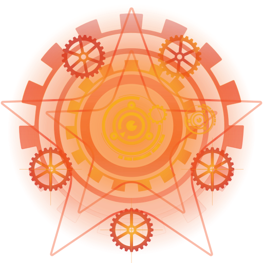

SeveritiumVibrant · Interactive · Memorable
Free open-source visual theme for Tanki Online. Modern animations, customization possibilities, community-driven — works on both browser and client.
A comprehensive visual overhaul that transforms the Tanki Online interface — without touching gameplay mechanics.
Severitium is free and open source. If it improved your game experience, consider supporting continued development.
Access the source code and development builds: